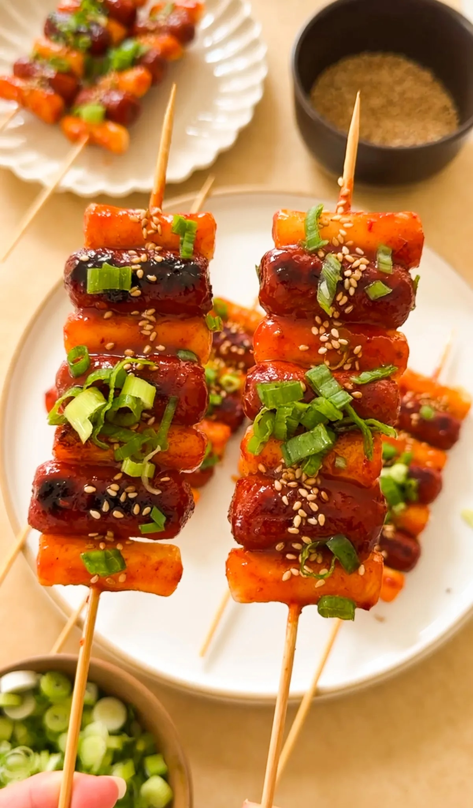
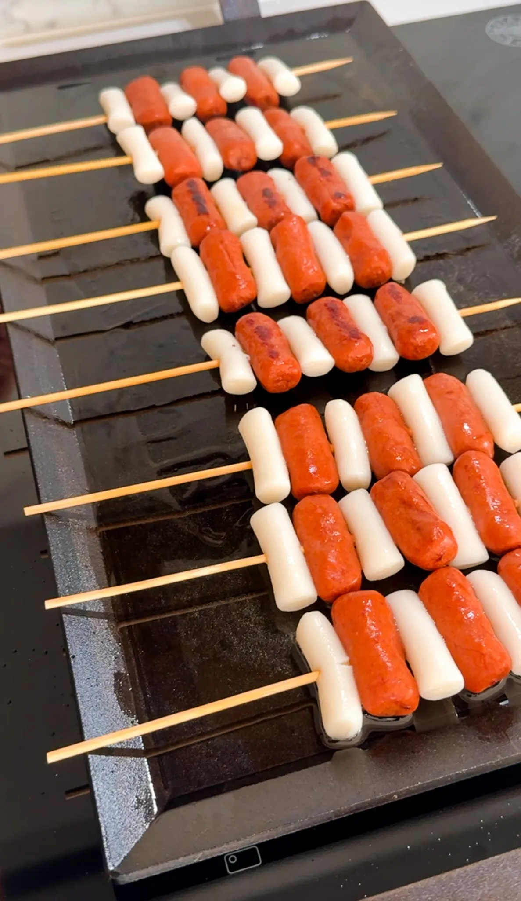

PREP TIME: 5 MINUTES
COOK TIME: 25 MINUTES
TOTAL TIME: 30 MINUTES
YEILDS: 5 TO 6
These sotteok skewers are everything you could want in a snack—quick to make, super tasty, and totally addictive. The contrast of chewy rice cakes with juicy mini hot dogs, all showered in a sweet and spicy glaze, is seriously next level. Whether you’re making them for a party or just a treat for yourself, you’re going to love every bite!
Jump to RecipeThese sotteok skewers are everything you could want in a snack—quick to make, super tasty, and totally addictive. The contrast of chewy rice cakes with juicy mini hot dogs, all drenched in a sweet and spicy glaze, is seriously next level. Whether you’re making them for a party or just a treat for yourself, you’re going to love every bite!
First things first: the sauce. This is where all the magic happens. Grab a bowl and mix together some ketchup, white sugar, and gochujang. The ketchup gives a tangy sweetness, the sugar adds just the right amount of extra sweetness, and the gochujang brings that essential spicy kick. For a bit more depth, add soy sauce and sesame oil to the mix. The soy sauce will add a savory umami note, while the sesame oil gives a rich, nutty flavor. To turn up the heat, sprinkle in some gochugaru—Korean red pepper flakes are perfect for adding a touch more spice. Finally, mix in a splash of warm water to help everything blend together smoothly. Stir until the sugar is completely dissolved and the sauce is nicely combined.
Now for the fun part: assembling the skewers. Start by threading a cooked rice cake onto a wooden skewer, then add a mini beef hot dog. Alternate between rice cakes and hot dogs until you’ve got a skewer that’s about three rice cakes and three mini hot dogs long. You can make them as short or as long as you’d like though.
To cook the rice cakes, just follow the package directions for whatever rice cakes you buy from the grocery store. It can take anywhere between 10 to 15 minutes of boiling to soften them up.
TIP:f you find that the rice cakes are very sticky and have trouble going through the skewer, coat the skewer in a bit of oil and this will help it glide right through.
With your skewers assembled, it’s time to cook them. Heat a pan over medium heat and add just enough cooking oil to keep things from sticking. Fry the skewers for about 5-7 minutes, turning them occasionally so they get crispy and golden on all sides. You want those rice cakes to get a nice sear and the hot dogs to brown up a bit. While the skewers are still in the pan, brush them generously with the sauce on both sides. Let them cook for another 1-2 minutes so the sauce can caramelize and stick to the skewers beautifully.
Once your skewers are cooked and coated in that amazing glaze, it’s time to serve. Sprinkle some sesame seeds and chopped scallions on top if you like, and enjoy them hot. These skewers are great on their own or paired with a side of pickled vegetables for a bit of crunch and freshness. Feel free to experiment with different types of rice cakes or sausages to make these your own. A few chopped green onions in the sauce or an extra splash of sesame oil can also add a nice touch.
If you tried this recipe and loved it, drop by down below and let me know how you liked it with a rating and comment! Feel free to also leave a question there about this recipe and I’ll get right back to it.
To see more recipes and behind-the-scenes, follow along on Instagram and Youtube! I’m also now on Pinterest pinning away so stop by and see what’s up.
These sotteok skewers are everything you could want in a snack—quick to make, super tasty, and totally addictive. The contrast of chewy rice cakes with juicy mini hot dogs, all drenched in a sweet and spicy glaze, is seriously next level. Whether you’re making them for a party or just a treat for yourself, you’re going to love every bite!
PREP TIME: 5 MINUTES
COOK TIME: 25 MINUTES
TOTAL TIME: 30 MINUTES
YEILDS: 5 TO 6
If the rice cakes are not gliding on the skewer, coat the wooden skewers in a bit of oil to help.